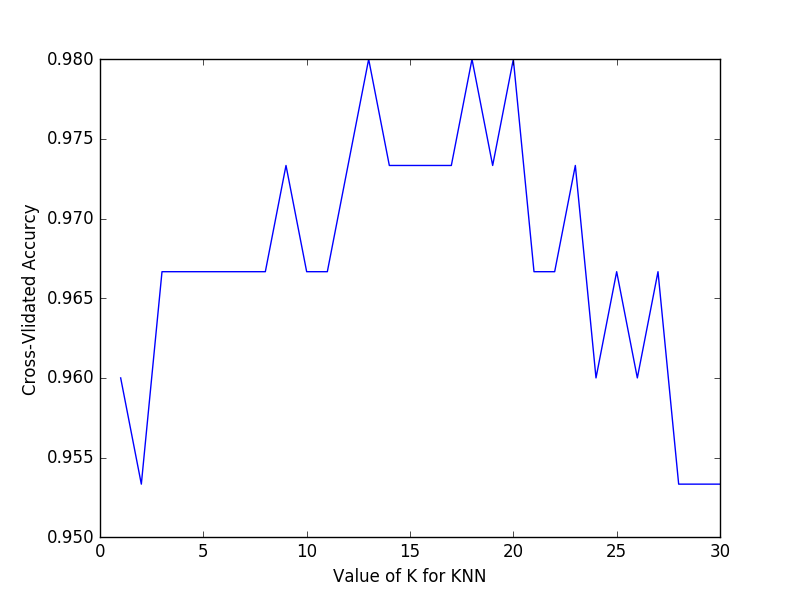
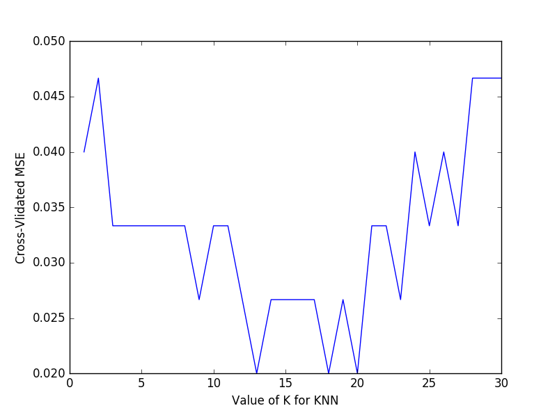

fromsklearn.datasetsimportload_irisfromsklearn.cross_validationimporttrain_test_splitfromsklearn.cross_validationimportcross_val_scorefromsklearn.neighborsimportKNeighborsClassifier#K近邻分类importmatplotlib.pyplotasplt#加载iris数据集iris=load_iris()X=iris.datay=iris.targetk_range=range(1,31)k_scores=[]forkink_range:knn=KNeighborsClassifier(n_neighbors=k)scores=cross_val_score(knn,X,y,cv=10,scoring='accuracy')k_scores.append(scores.mean())plt.plot(k_range,k_scores)plt.xlabel('Value of K for KNN')plt.ylabel('Cross-Vlidated Accurcy')plt.show()
fromsklearn.datasetsimportload_irisfromsklearn.cross_validationimporttrain_test_splitfromsklearn.cross_validationimportcross_val_scorefromsklearn.neighborsimportKNeighborsClassifier#K近邻分类importmatplotlib.pyplotasplt#加载iris数据集iris=load_iris()X=iris.datay=iris.targetk_range=range(1,31)k_scores=[]forkink_range:knn=KNeighborsClassifier(n_neighbors=k)loss=-cross_val_score(knn,X,y,cv=10,scoring='mean_squared_error')k_scores.append(loss.mean())plt.plot(k_range,k_scores)plt.xlabel('Value of K for KNN')plt.ylabel('Cross-Vlidated MSE')plt.show()
交叉验证 Cross-validation（1）
Sklearn中的Cross Validation 对于我们选择正确的Model和Model的参数是非常有帮助的， 我们能只管的看出不同Model或者参数对于结构准确度的影响。
1. 基础验证方法
2. 交叉验证法
3. 如何选择模型参数 -- accuray
一般来说
准确率（accuracy）可以用于判断分类（Classification）模型的好坏。
从图中可以得知，
k值的选择在12~18最好。高过18以后，准确率开始下降。 下降的原因就是过拟合（Over fitting）问题4. 如何选择模型参数 -- Mean squared error
一般来说
平均方差(Mean squared error)可以用于判断回归（Regression）模型的好坏。
由此图可以得知，平均方差越低越好，因此选择
13~18左右K值最好。查看全部代码